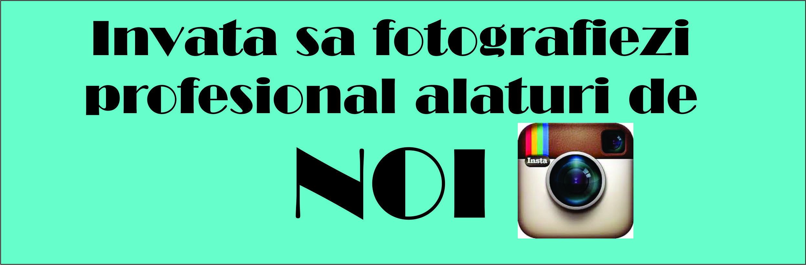

|  |
TutorialeCreeaza o legatura cu subiectul tau Foloseste Distante Focale Mari "Trage" Wide Incearca obiectivele de 50mm Alb Negru Invata tot ce poti despre lumina Nu iti fie frica sa folosesti blitzul Invata setarile camerei foto Cauta naturalete Implica cadre in miscare |
|
|---|---|
Cum sa fotografiezi persoane ca un profesionistCu siguranta este unul din tipurile de fotografie din cele mai accesibile, suntem cu toti inconjurati de diferite persoane: prieteni, familie, cunostinte, clienti sau chiar necunoscuti daca iti faci curaj si ii abordezi . Asta inseamna ca acest tip de fotografie ne este tot timpul la indemana, indiferent de vremea de afara ( de ex: in fotografia de landscape trebuie sa astepti sa prinzi acel moment al zilei pe care il doresti). Fotografiind persoane, practic fotograful are optiunea de a avea control complet asupra imaginii si evident si a modului de lucru, deoarece toate elementele care pot face o fotografie sa fie buna sunt la indemana. Fiecare persoana este unica (cel putin in teorie ). In cazul in care lumina nu e potrivita in momentul in care fotografiezi, poti sa faci ceva in privinta asta: poti sa schimbi locatia, sau sa folosesti un blitz ca sa o controlezi. Cel mai important aspect dintre toate, contrar spuselor multora, nu este echipamentul ci IMAGINATIA. Incercati in primul rand sa va simtiti bine la o sedinta foto, atunci cand, ca si fotograf te simti bine, si subiectul tau se va relaxa si va poza mai usor. Daca nu stapanesti foarte bine detaliile tehnice ale camerei foto, oricand poti sa accesezi internetul pentru a te documenta, fie poti sa intrebi un mai “batran” in ale fotografiei (de cele mai multe ori sharingul este acceptat) |
|